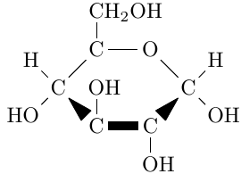
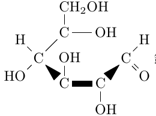
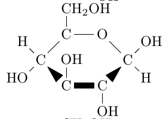
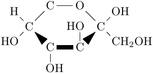
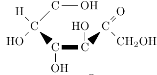
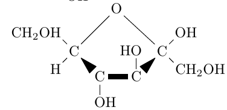
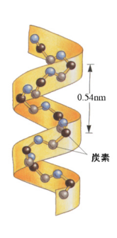
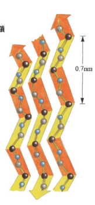

糖類 - suger
単糖
グルコース (ブドウ糖)
水溶液中では, (i)α-グルコース, (ii)鎖状アルデヒド型グルコース, (iii)β-グルコースが, 平衡状態にある.
結晶では (i) で存在している.
ヘミアセタール構造をもち, 還元性を示す.
(i) の構造式
(ii) の構造式
(iiii) の構造式
動植物の体の中に存在する.
フルクトース (果糖)
水溶液中では, (iv)β-フルクトース (六員環), (v)ケトン型, (vi)β-フルクトース (五員環)が, 平衡状態にある.*
決勝ではβ型で存在している.
還元作用を示す.
*厳密にはα-フルクトースも含めた5種類の平衡状態. 高校化学ではほぼ見ない.
(iv) の構造式
(v) の構造式
(vi) の構造式
ガラクトース
グルコースの, 4 位にくっついている H と OH の上下関係が入れ替わった構造をしている.
二糖
-
- マルトース (麦芽糖)
- α-グルコースとα-グルコースが結合.
- α-1, 4-グリコシド結合で結合.
- 還元作用を示す.
-
- スクロース
- 佐藤に含まれる.
- α-グルコースとβ-フルクトース(五員環)(左右反転)が結合.
- α-1, 2-グリコシド結合で結合.
-
- ラクトース
- 牛乳中に存在
- β-ガラクトースとβ-グルコース(上下反転)が結合.
- β-1,4-グリコシド結合で結合.
- 還元性を示す.
-
- セロビオース
- β-グルコースとβ-グルコース(上下反転)が結合.
- β-1,4-グリコシド結合で結合.
- 還元性を示す.
多糖
デンプン
α-グルコースが多数縮合している.
分子構造は らせん状
熱水に溶けて, コロイド溶液(親水コロイド)になる.
ヨウ素液で, 赤紫に.(ヨウ素デンプン反応)
らせん構造中にヨウ素が入り込んで呈色.
デンプンにアミラーゼ(酵素)を通してデキストリンができる.
さらにアミラーゼ(酵素)を通すと, マルトース(二糖)ができる.
そこにマルターゼ(酵素)を通してグルコースが得られる.
また, 希硫酸でも加水分解される.
-
- アミロース
- α-1,4-グリコシド結合だけで連なっている.
- 直鎖状 構造
- 熱水にとけやすい[やすい/にくい].
-
- アミロペクチン
- α-1,6-グリコシド結合も含んでいる.
- 枝分かれ 構造
- 熱水にとけにくい[やすい/にくい].
セルロース
植物細胞壁の主成分である.
β-グルコースが多数結合している.
β-1,4-グリコシド結合で連なった繊維状構造
セルロースにセルラーゼ(酵素)を通すとセロビオース(二糖)ができる.
そこにセロビアーゼ(酵素)をとおしてグルコースが得られる.
タンパク質 - protain
α-アミノ酸 - α-amino acid
分子内に アミノ基とカルボキシ基を持つ.
| R | ||||
| ┃ | ||||
| H2N | ━ | C | ━ | COOH |
| ┃ | ||||
| H |
R(置換基) と アミノ酸の名称
適宜表の片側が見えるようにしながら使ってください
| グリシン | ━H |
| アラニン | ━CH3 |
| フェニルアラニン | ━CH2━⌬ |
| チロシン | ━CH2━⌬━OH |
| セリン | ━CH2━OH |
| システイン | ━CH2━SH |
| メチオニン | ━(CH2)2━S━CH3 |
| アスパラギン酸 | ━CH2━COOH |
| グルタミン酸 | ━(CH2)2━COOH |
| リシン | ━(CH2)4━NH2 |
ただし, ⌬はp位で結合.
この中で, アスパラギン酸, グルタミン酸は, 酸性アミノ酸, リシンは塩基性アミノ酸という.
RがHである グリシン を除いて, アミノ酸には不正炭素原子がある.
性質
-
- 双生イオンである.
- 酸性を示す ━COOHと, 塩基性を示す ━NH2があるため, 酸と塩基の量性質を満たす.
- 結果分子内の H が H+ となって移動し, 分子内に正電荷と負電荷をもつ.
-
- 融点が高い
- 双生イオンによる静電気的な強い引力によって.
等電点
アミノ酸は, 陽イオン, 陰イオン, 双生イオンが平衡状態にあり, pHによってそれらの濃度が変化する.
ちょうど正の電荷と負の電荷が釣り合い, 双生イオンが最も多くなるpH値を等電点という.
等電点より低いpHでは 陽イオンが多い.
この性質を使うと, 電気泳動とかができる.
等電点より低いpHのもとで電圧をかけると 陰極方面へ移動するし, 高いpHのもとで電圧をかけると 陽極方面へ移動する.
ニンヒドリン反応
アミノ酸水溶液に ニンヒドリンを加えて, 温めると, ━NH2と反応して, 青紫色に抵触する.
ペプチド - peptide
α-アミノ酸の分子間で, ━COOHと━NH2が脱水縮合して生じる化合物は, ペプチドといい, 結合部(━CO━NH━)を ペプチド結合 という.
タンパク質 - protain
構造
- 一次構造
-
アミノ酸の配列順序そのもの。
立体構造を考えない
- 二次構造
-
アミノ酸鎖の部分的な立体構造
- α-ヘリックス
- らせん状構造
- ペプチド結合中の ━NH━ と, 他のペプチド結合中の ━CO━ が 水素結合で引き合う.
-
(i)の画像 (でかいです)
らせん構造の部分的立体構造
- β-シート
- ひだ状構造
- 平衡に並んだポリペプチド同士が 水素結合 で引き合う.
-
(ii)の画像 (でかいです)
段折り状の部分的立体構造
- 三次構造
- 二次構造のαヘリックスや、βシートがたくさんつながって、より複雑になる立体構造
- 結合としては, イオン結合やジスルフィド結合(━S━S━)が関与している.
- 四次構造
- 複数の三次構造がさらに集まってカオスになった構造
分類 - 成分
| 名称 | 構成 | 例 (所在) |
|---|---|---|
| 糖タンパク質 | タンパク質 + 糖 | ムチン(唾液) |
| 色素タンパク質 | タンパク質 + 色素 | ヘモグロビン |
| リンタンパク質 | タンパク質 + リン | カゼイン(牛乳) |
| 核タンパク質 | タンパク質 + 核酸 |
ヌクレオヒストン (細胞核) |
分類 - 形状
-
- 繊維状タンパク質
- 分子が平衡に並んだりねじれあったりして繊維状に.
- みずに溶けにくい[やすい/にくい]
-
- 球状タンパク質
- 分子が複雑に絡み合って球状に.
- 水に溶けやすい[やすい/にくい]
性質
-
- 球状タンパク質は親水コロイド
- そのため電解質を多量[少量/多量]に加えると, 沈殿ができる(塩析)
-
- 変性
- 熱を加えたり, 酸塩基や重金属イオンの作用によって, 水素結合の組み換えなどで高次構造が変化し, 分子の形状が変化し, 性質が変わる.
呈色反応
-
- ビウレット反応
-
NaOHaqによって塩基性にしたのち, 少量の CuSO4aq を加えると, Cu2+とペプチド結合中のN原子が廃位結合をして錯イオンを生じる.
⇒ 赤紫色に. - 2個以上のペプチド結合を持つ分子で見られる.
-
- キサントプロテイン反応
- タンパク質水溶液に 濃硝酸 と熱を加えると, 黄 色に呈色.
- さらに NH3aqなどを加えて塩基性にすると, 橙黄色に呈色.
- タンパク質を構成するアミノ酸に, ニトロ 化されやすい ベンゼンを持つアミノ酸が含まれている場合に起こる.
-
- ニンヒドリン反応
- タンパク質を構成するアミノ酸に, ━NH2を含むアミノ基があると, 赤紫色に呈色.
-
- 硫黄元素の検出.
- タンパク質水溶液に, NaOH(固)と熱を加えたのち, (CH3COO)2Pb aqを加えると, PbS(黒色沈殿)を生じる.
- タンパク質を構成するアミノ酸に, Sを含むものがあると起こる.
酵素 - enzyme
酵素は特定の物質((i)基質)の特定の反応にだけ作用する触媒. このような特性を 基質特異性 という.
酵素には触媒としての作用を示す特定の部位(活性部位)がある
酵素と (i) が合体したものは 酵素 - 基質複合体とよばれる.
酵素反応を阻害する物質を 酵素阻害剤という.
はたらく条件
酵素にはちょうどいい温度, 最適温度と, ちょうどいいpH, 最適pHがある.
酵素はタンパク質だから, 温度やpHの大きな変化で触媒作用を失うことが多い(失活)